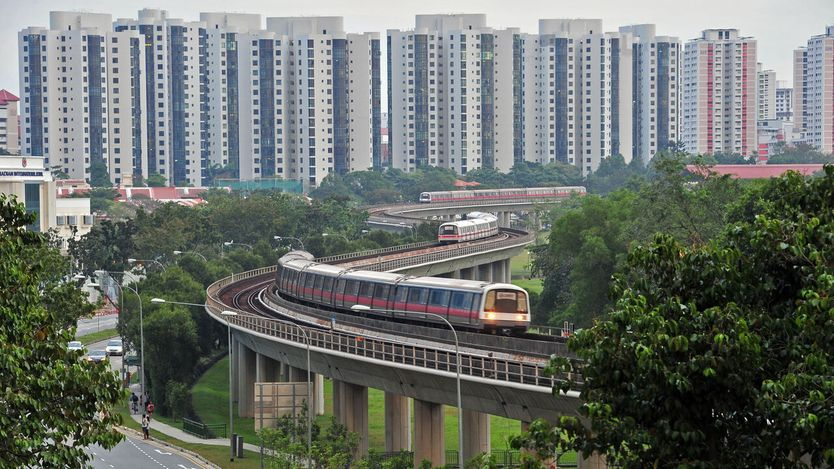

一篇研究“寻租”公务员的论文震动了新加坡
Research on grasping bureaucrats startles Singapore
它揭示新加坡学术文化的问题，多过揭露其公务员体系的问题

- 四位经济学家发现，2007至2019年间，新加坡公务员在尚未公布的规划地铁站一公里内购买私宅的概率比对照组高60%，持有后再卖出每年可比同类房产多赚约8万新元。论文发表日期恰逢部长加薪最高9%，舆论因此沸腾。
- 论文其实没那么严厉。它的核心逻辑是：政府对腐败程度的判断来自有噪声的信号，而对腐败的执法力度则是干净的信号；公务员会据此重算自己寻租的风险收益比，从而影响整个社会诚信规范的强弱。
- 研究者发现，2011至2012年新加坡因无关丑闻收紧执法后，公务员“精准买房”的证据消失了。也就是说，当仅靠规范失效时，更严格的执法反而持续提升了诚信。作者强调这不是对新加坡的控诉，恰恰相反。
- 真正让人不安的是学术圈的反应。两位新加坡国立大学教授要求把自己的名字从致谢名单中删除，称是误列。作者认为，人们把“被致谢”误当成“认同结论”，这种紧张本身就是一种腐坏。
你大概不会想到，一份85页、满是公式的经济学论文会激起公众情绪。但在新加坡，四位经济学家——托马斯·皮斯科尔斯基、阿米特·塞鲁、张健和赵春——的新工作论文做到了。论文发现，2007至2019年间，在这个以清廉著称的城市国家，公务员在已规划但尚未公布的地铁站一公里范围内购买私宅的可能性，比对照组高60%。那些随后卖出的人，每持有一年，就比城区其他地方同类公寓的业主多拿到约8万新元（6.2万美元）。论文发表不到一周，新加坡薪酬优渥的部长们又获得最高9%的加薪，舆论因此更加沸腾。一位网友抱怨道：“这只是冰山一角吧？”
9月25日，政府表示认真对待论文揭示的“统计规律”，并就可能的“实际不当行为”立案调查。这篇论文也在学界掀起风波。致谢中列出的20位学者里，包括哈佛大学的李绳武。他是新加坡已故建国总理李光耀的孙子，也是本国近期几届政府激烈的批评者。新加坡国立大学的两位教授伊万·冯和陈映岚采取了极不寻常的做法，要求把自己的名字从致谢中删除，称是被误列。
这场风波之所以引人注目，是因为仔细看下来，论文其实并没有那么严厉。它的出发点是：政府无法精确判断本国社会究竟有多腐败或多清廉，只能从腐败态度调查、偶发丑闻这类渠道获取信号。而这些信号都充满噪声：既可能反映普遍的腐烂，也可能只是离群值。
相比之下，政府对贪腐的回应是一个干净的信号：它可以选择是否收紧执法。这反过来促使公务员重新计算自己行为不端的风险收益比。他们的选择汇集起来，又会影响社会诚信规范的强弱。若规范变强，腐败信号减少，政府便可以放松执法，反之亦然。
为了看这一机制如何运作，论文考察了2011至2012年前后的一段时期，当时新加坡因与可疑购房无关的丑闻（其中一桩尤其下作，涉及一名官员用机密采购信息换取性服务）收紧了执法。研究者发现，2011年之后，公务员精准买房的证据消失了。换言之，在单靠规范失灵的地方，更严格的执法似乎持续提升了诚信。塞鲁说：“我们不认为这篇论文是对新加坡的控诉。恰恰相反。”
不过，围绕这项研究的喧闹，确实给新加坡的学术文化蒙上阴影。2014年，执政党的批评者陈庆炎在两次被拒终身教职后，经历了自称的“被迫离职”，据称这一决定违背了终身教职委员会的建议。
冯教授和陈教授的反应说明，他们觉得与这篇论文扯上关系代价太高。陈教授未回应置评请求。冯教授说：“新闻媒体（以及外行人）似乎把‘被致谢’和‘认同或赞同结论’混为一谈。”有一群紧张的教授，总比有一群腐败的官僚要好。但这同样是一种腐坏。■